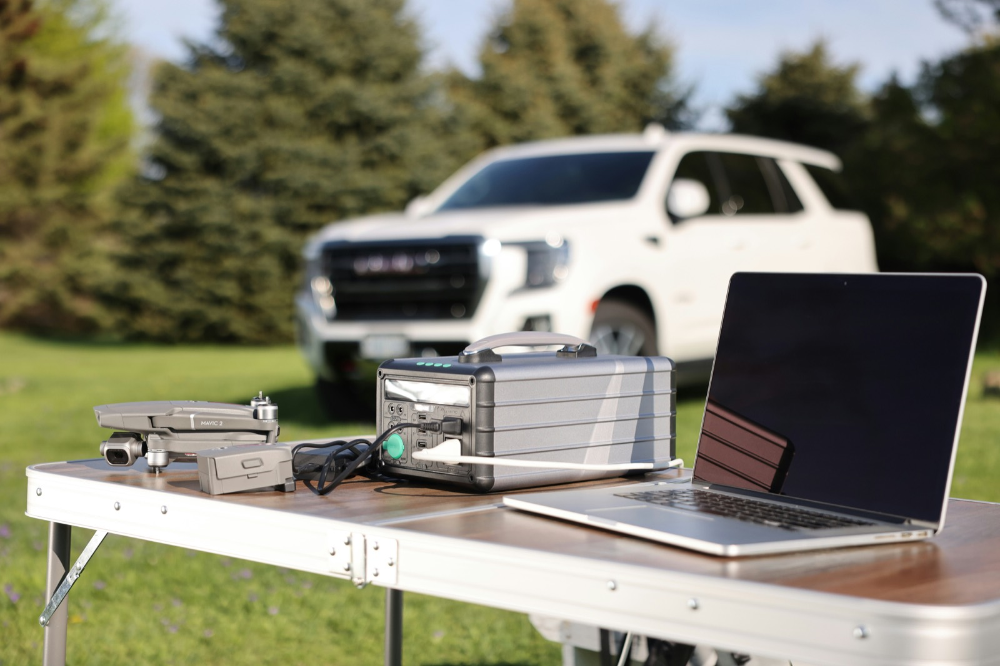
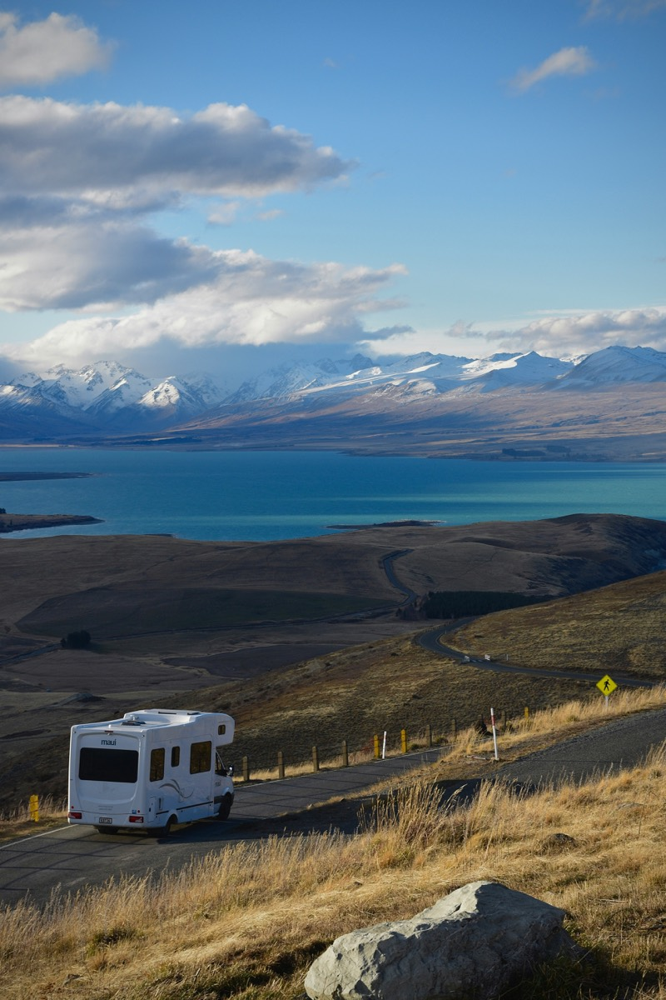
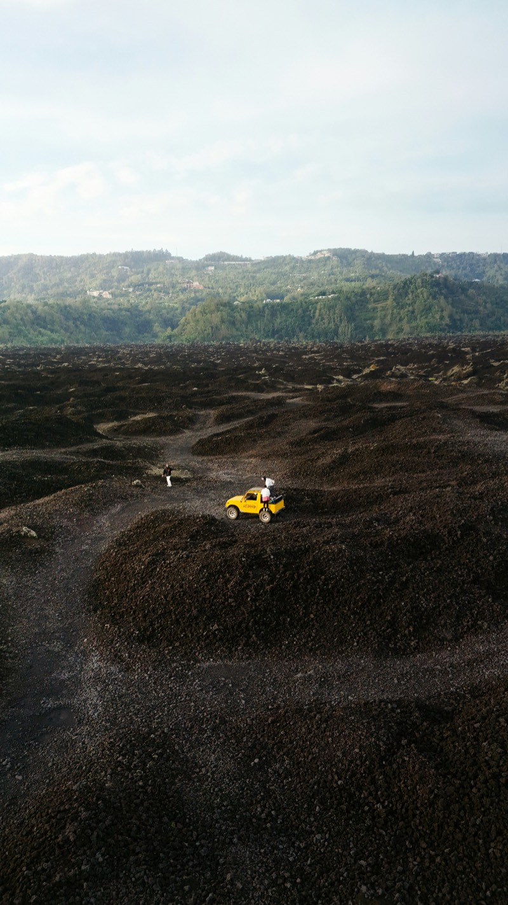

MT-6K
随身而行。
随处有电。
九公斤，换六千瓦。一个人单手提起，就能带进地下室、搬上船、扛上山坡。

9–12 kg
比活塞式发电机轻 80%
3,000 h 以上
对比 500–800 小时
8 种燃料
汽油、柴油、燃气等
氢气 + 甲醇
支持低碳燃料
−40 °C
冷机秒级启动
~600 W/kg
系统级功率密度
01
对比同级产品
对比同等额定输出的便携式汽油变频发电机。
| 指标 | 同级便携式汽油变频发电机 | MT-6K |
|---|---|---|
| 重量 | 50–120 kg | 9–12 kg |
| 使用寿命 | 500–800 小时 | 3,000 小时以上 |
| 冷启动 | −40 °C 无法启动 | −40 °C，秒级启动 |
| 4000 m 输出 | 约为额定功率的一半 | 额定功率的 75% 以上 |
| 燃料 | 仅限汽油 | 8 种燃料，含甲醇与氢气 |
| 电力输出 | 仅交流 | 交流 + 直流 |
02
应用场景
家庭备用
一人可搬，收进柜子即可，无需固定在基座上。

应急救援
空运或人力送达无路、无电网的现场。

房车与船舶
省下的重量与体积来自设备本身，而不是牺牲载重。

野外施工
高海拔仍保持额定输出，活塞式发电机在此损失一半。

机器人
可满足机载 AI 算力平台所需的电力负载。
工业无人机
以混动增程替代纯电池方案。